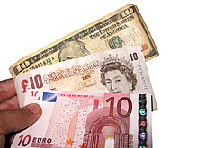

A banknote-also called a bill (North American English) papermoney, or simply a note-is a type of negotiable promissory note , made by a bank or other licensed authority, payable to the bearer on demand. Banknotes were originally issued by commercial banks, which were legally required to redeem the notes for legal tender (usually gold or silver coin) when presented to the chief cashier of the orignating bank. These commercial banknotes only traded a face value in the market served by the issuing bank. Commercial banknotes have primarily been replaced by central bank or monetary authorities.

Banknotes with a face value of ten in the United
States dollar,pound sterling as
issued by the Bank of England
and euro.
National banknotes are often - but not always - legal tender, meaning that courts of law are required to recognize them as satisfactory payment of money debts. Histrocally, banks sought to ensure that they could always pay customers in coins when they presented banknotes for payment. This practice of "backing" notes with something of substance is the basis of the history of central banks backing their currencies in gold or silver. Today, most national currencies have no backing in precious metals or commodities and have value only by fiat. With the exception of non-circulating high-value or precious metal issues,coins are used for lower valued monetary units, while banknotes are used for higher values.
Code of Hammurabi Law 100(c 1755-1750BC) stipulated repayement of a loan by a debtor to a creditor on a schedule with a maturity date specified in written contractual terms. Law 122 stipulated that a depositor of gold, silver, or other chattel/movable property for safekeeping must present all particles and a signed contract of bailment to a notary before depositing the articles with a banker, and Law 123 stipulated that a banker was discharged of any liability from a contract of baliment if the notiary denied the existence of the contarct. Law 124 stipulated that a depositor with a notarized contract of bailment was entiled to redeem the entire value of their deposit, and Law 125 stipulated that a banker was liable for replacement of deposits stolen while in their possesion.
In China during the Han dynasty, promissory notes appeared in 118 BC and were made of leather. Rome may have used a durable lightweight substance as promissory notes in 57 AD which have been found in London. However, Carthage was pruported to have issued bank notes on parchement or leather before 146 BC. Hence Carthage may be the oldest user of lighweight promissory notes. The first known banknote was first developed in China during the Tang and Song dynasties, starting in the 7th century. Its root were in merchant receipts of deposit during the Tang dynasty (618-907), as merchants and wholesalers desired to avoid the heavy bulk of copper coinage in large commercial transcations. During the Yuan dynasty (1271-1368), banknotes were adopted by the Mongol Empire. In Europe, the concept of banknotes was first introduced during the 13th century by travellers such as Marco Polo, with European banknotes appearing in 1661 in Sweden.
Counterfeiting, the forgery of banknotes, is an inherent challenge in issuing currency. It is countered by anticounterfienting measures in the printing of banknotes and cheques has been a principal driver of security printing methods developement in recent centuries.